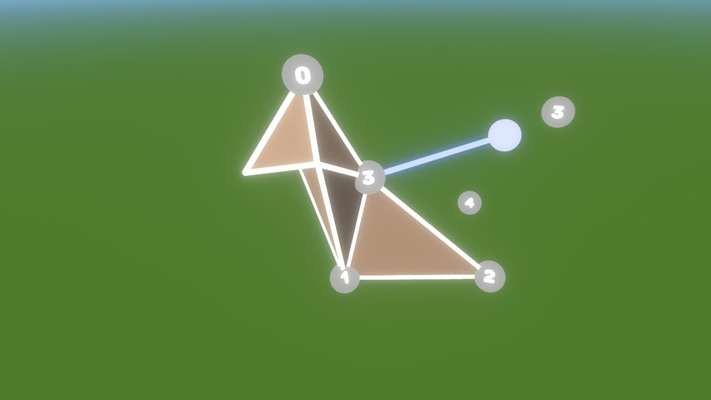
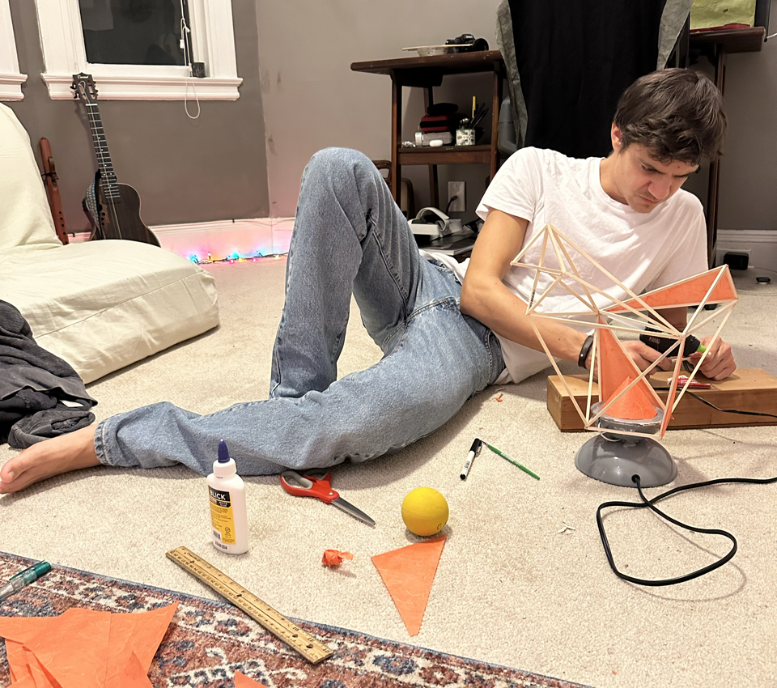
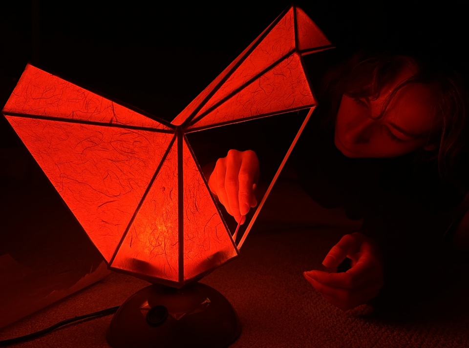
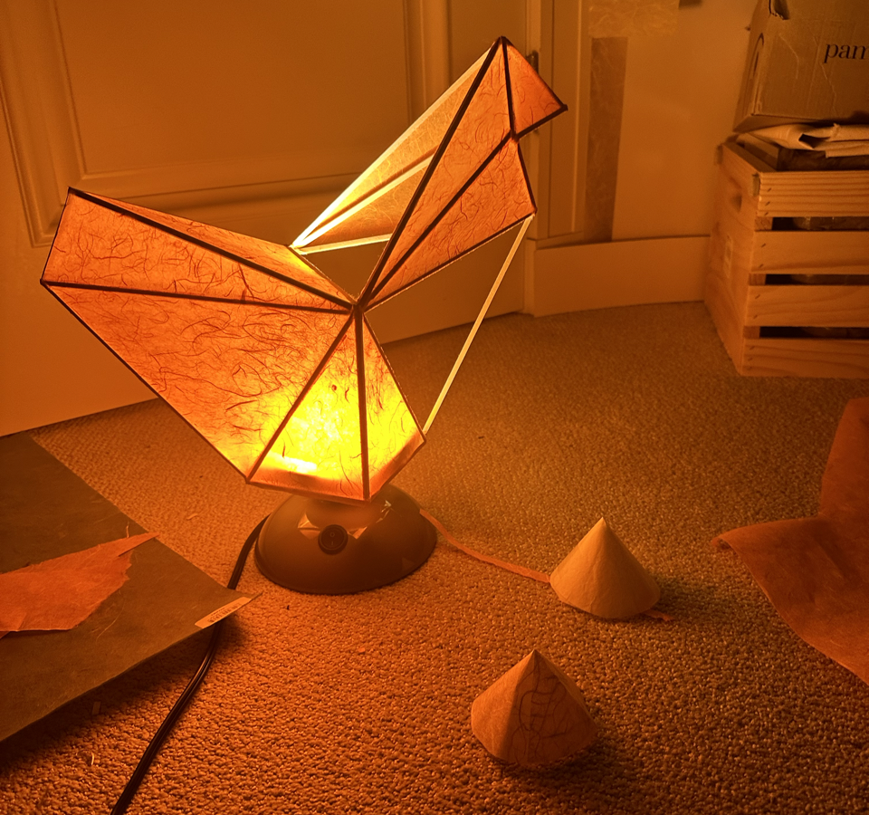
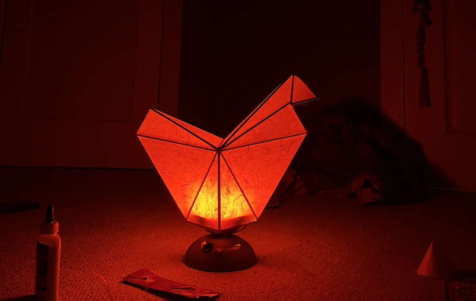
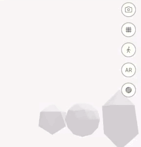
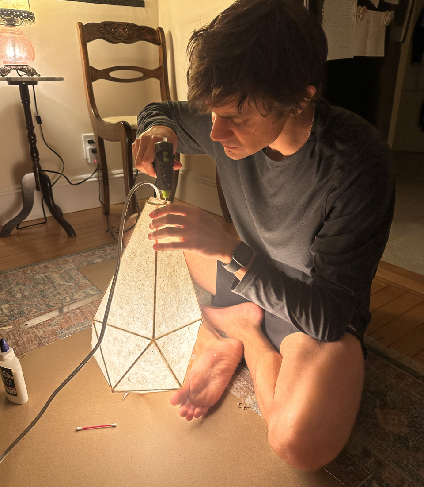
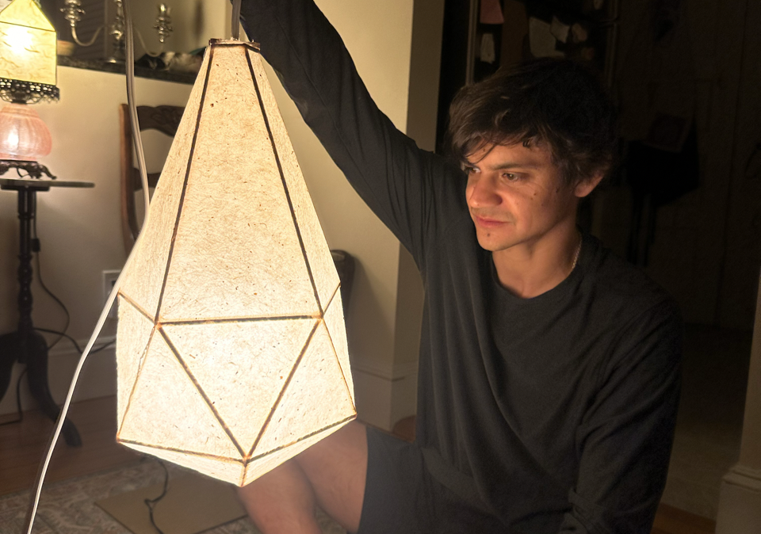
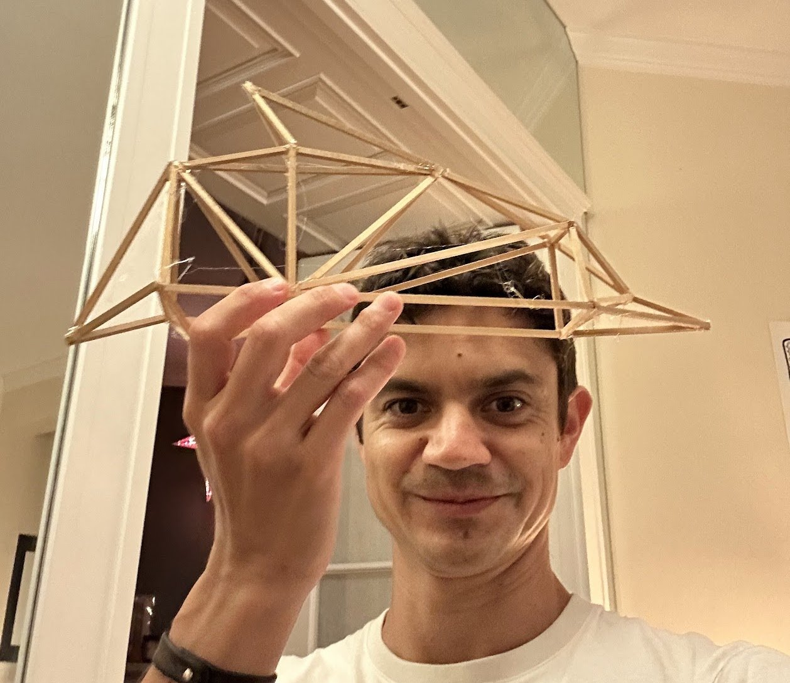
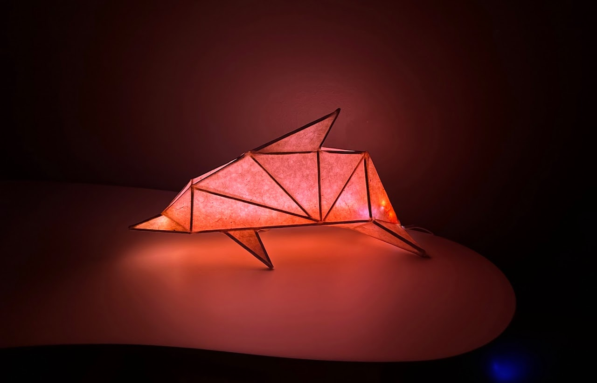

Paper Lamps
Digitally-aided analogue production
Three handmade paper lamps designed with digital tools and constructed entirely by hand from wooden dowel and Nepali lokta paper.
Paper lamps are created using digital tools to design and prototype, but fully offline tools to produce. As a technologist I am both empowered by and often tired of the software that is integral to my creative process. These lamps could have potentially been 3D printed, but that would have robbed them of their wooden warmth, their glue-filled imprecision, and the softness that contrasts their geometric forms.
Lamp 1: Chicken
Inspired by Wendy, the Skybinder chicken.

First we created a paper prototype out of cardboard, modelling the form on the lines of Skybinder's chicken.

Then we glued square wooden dowel together, cutting vertices to intersect naturally. Hot glue allowed a degree of flex and tolerance of imprecision.

Finally high-grain Nepali lokta paper was applied with white glue, which was chosen for its quick drying properties and its ability to dry without shrinking or wrinkling the paper.
A variety of cones were placed over the LED source to diffuse, color, and soften the light.

Final Result

Lamp 2: Droplet
Intended as a hanging lamp, this one needed to have a sense of gravity and roundness to balance its low-poly geometric form.

We started by modelling a variety of droplet shapes in Blender, based off of different primitive spheres — a UV sphere and an icososphere.

A similar process of hot glued wooden dowel covered in Lokta paper. This form had rotational symmetry, so we created a jig to ensure all the angles remained consistent.

Lamp 3: Dolphin
This lamp used an LED strip as the light source, which needed to diffuse enough to glow across the length of the form.

We modeled a dolphin in virtual reality using Tiltbrush. This was by far the most complex design, with the highest number of vertices and edges, so many prototypes were made in VR. Vertices can be connected in multiple ways, and each imbues a different sense of shape to the three dimensional form.

The remainder of the process was similar to the above: glue dowel, diffuse light, apply paper.
One challenge with this form was ensuring that the light was equally diffuse in the nose of the dolphin, despite the LEDs being much closer to the outer faces. Extra layers of Lokta had to be applied directly to the LED strip to decrease the light's intensity, given the distance was so much lower and light decreases as the inverse square of distance where Intensity = 1 / distance ^2.

Final Form
Click around this gaussian splat to explore it.
| Wyatt Roy | Designer, Fabricator |
| Julia Mattis | Designer, Fabricator |

This space is yours - react to this project or talk about your own related work!